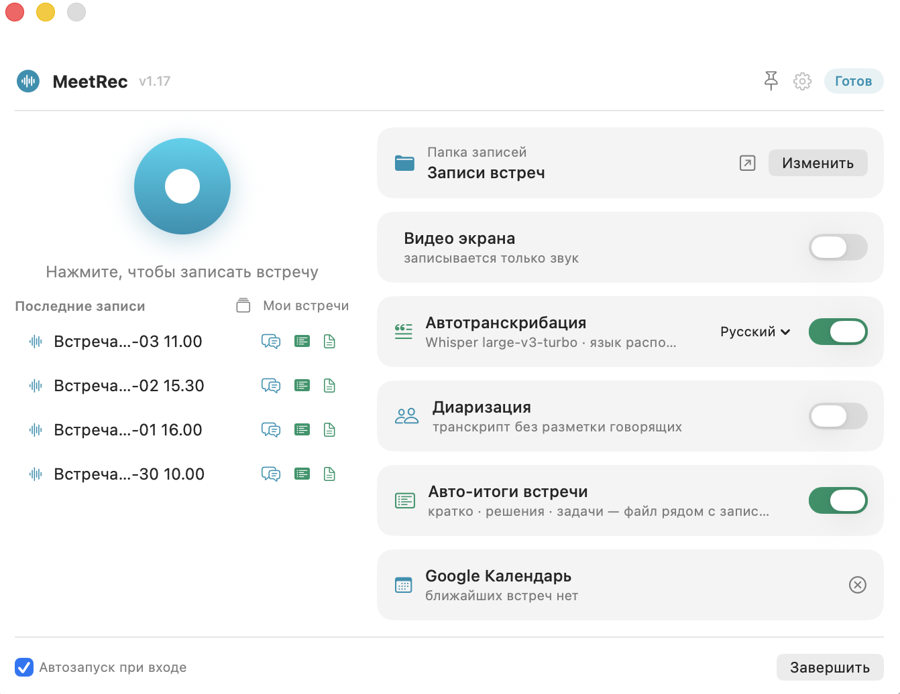

Записывайте любую встречу, получайте расшифровку, разбор по спикерам, ответы ИИ и готовые итоги с задачами — полностью на своём Mac. Без подписок и API-ключей.

От записи до готовых action items без ручной работы и без чужих серверов.
Системный звук собеседников и ваш микрофон в один файл — в Zoom, Meet, Teams или звонке в браузере.
Whisper large-v3-turbo на Metal. Час встречи — несколько минут в фоне, с таймкодами.
Транскрипт превращается в диалог «кто что сказал» — удобно читать и работать дальше.
После встречи сам формирует «Кратко / Решения / Задачи» с исполнителями и сроками.
Локальная модель Qwen: спросите что угодно о встрече — ответ по транскрипту.
«Что решали по деплою в прошлом месяце?» — ответ сразу по всем встречам, со ссылками на источники.
Ваши переговоры, цифры и клиентские данные остаются на компьютере. MeetRec выходит в сеть только чтобы один раз скачать модели — после этого работает полностью автономно. Никаких аккаунтов, серверов и «мы обрабатываем ваши данные для улучшения сервиса».
Скачать бесплатноЧетыре шага — и разбор встречи готов.
Одна кнопка в строке меню. Пишется звук встречи и ваш микрофон.
Локальная расшифровка с таймкодами и разбором по говорящим.
Кратко, решения и задачи формируются автоматически рядом с записью.
Чат по встрече и поиск по всему архиву — локально, без облака.